地图、图板与封底 · Maps, Plates, and Back Cover
原书后置图像页
为《被遗忘国度》地图与图板页，包括 Vaasa、Moonsea、Dalelands、Cormyr、Sembia、剑湾及其周边区域的全彩地图、区域放大图、道路与河流标注、城镇与遗迹位置、比例信息和图例。第206页与第216页为原书的空白／彩色地图页，保留原始页面，不将空白误识为缺页。
Vaasa／Moonsea 地图
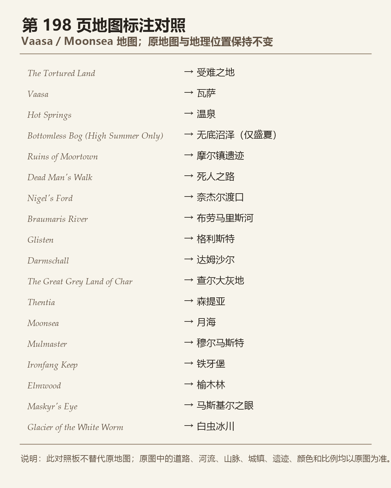
地图标签见中文对照板；道路、河流、山脉、城镇、遗迹、颜色和比例以原地图为准。
Vaasa／Damara 周边地图
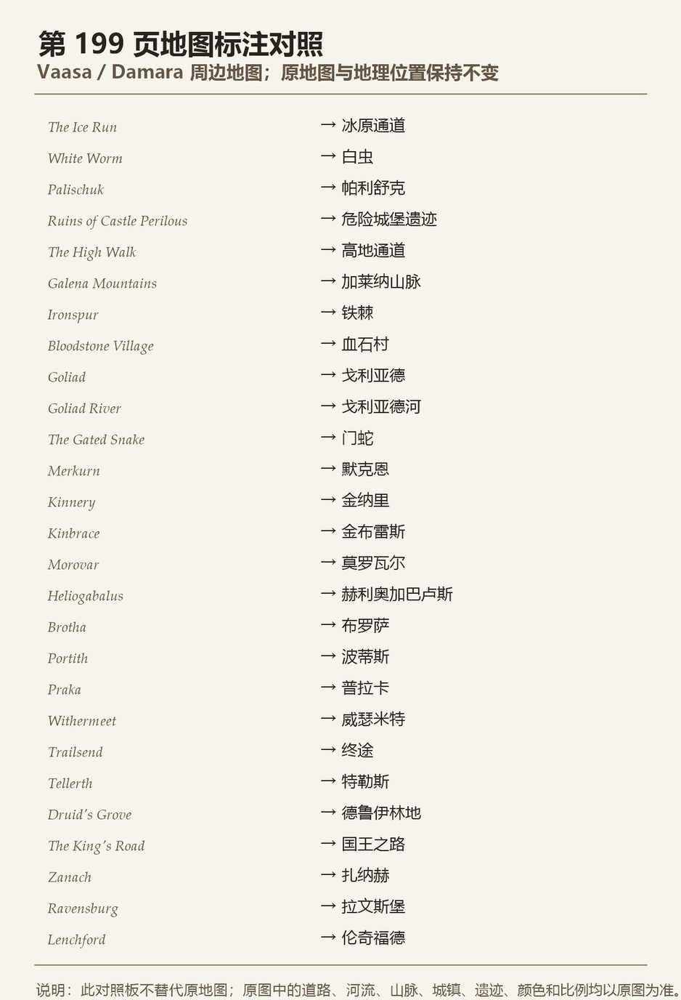
北方／Rawlinswood 地图局部
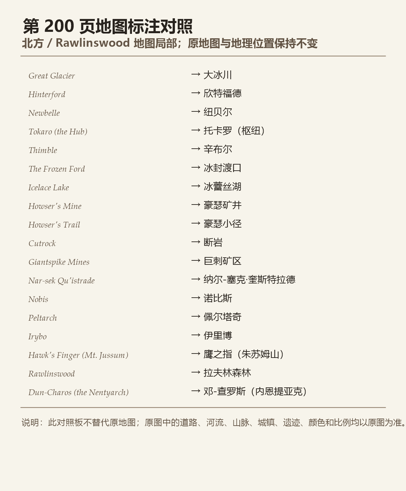
北方地图局部
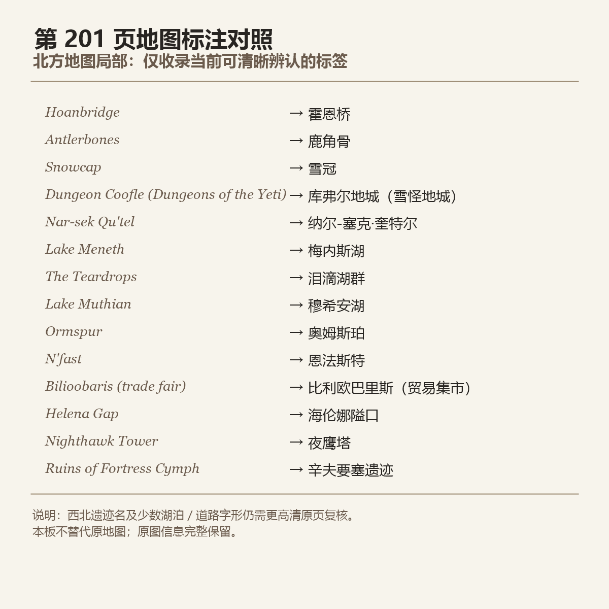
龙湾南部与东部内陆地图局部
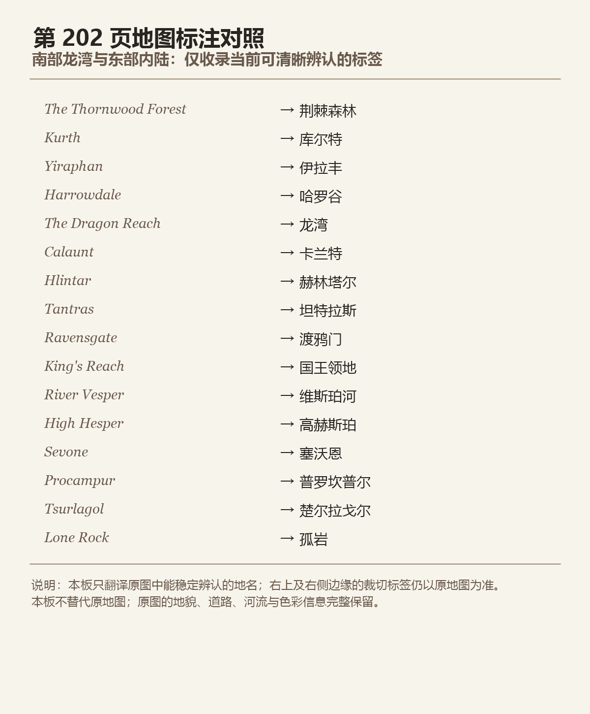
第202页的对照板覆盖荆棘森林、库尔特、伊拉丰、哈罗谷、龙湾、卡兰特、赫林塔尔、坦特拉斯、渡鸦门、国王领地、维斯珀河、高赫斯珀、塞沃恩、普罗坎普尔、楚尔拉戈尔和孤岩。右上及右侧边缘的裁切标签仍以原图为准。
安皮尔图尔地图局部
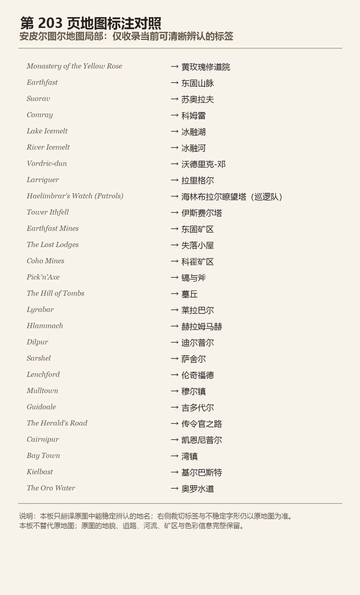
第203页的对照板覆盖黄玫瑰修道院、东固山脉、冰融湖、冰融河、东固矿区、赫拉姆马赫、迪尔普尔、萨舍尔、莱拉巴尔、伦奇福德、穆尔镇、传令官之路、凯恩尼普尔、湾镇、基尔巴斯特与奥罗水道等标签。右侧裁切地名及扫描中不稳定的字形仍以原图为准。
大谷地与莱瑟尔森林地图局部
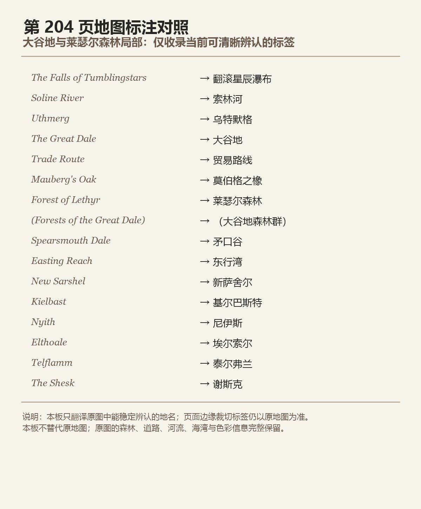
第204页的对照板覆盖翻滚星辰瀑布、索林河、乌特默格、大谷地、贸易路线、莫伯格之橡、莱瑟尔森林、矛口谷、东行湾、新萨舍尔、基尔巴斯特、尼伊斯、埃尔索尔、泰尔弗兰与谢斯克等标签。页面边缘裁切地名仍以原图为准。
血石之地地图与图例
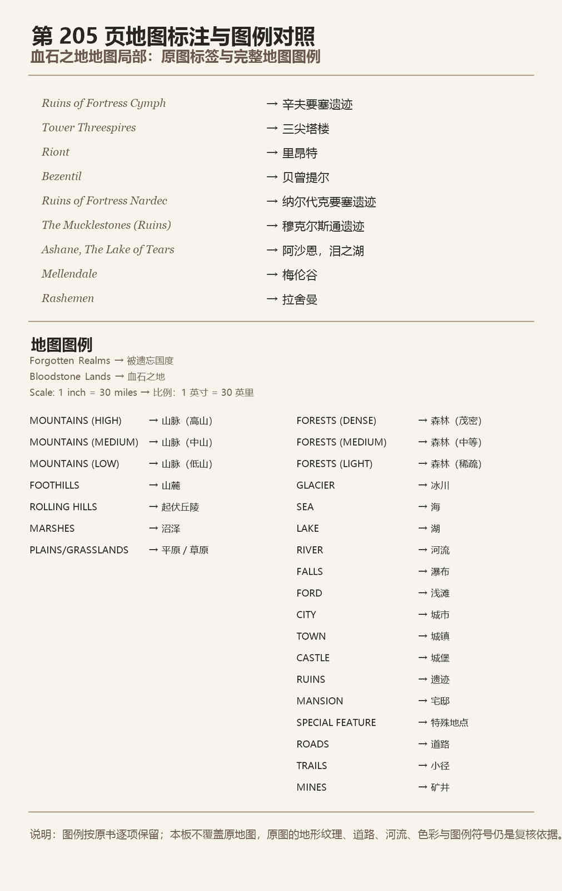
第205页的对照板覆盖辛夫要塞遗迹、三尖塔楼、里昂特、贝曾提尔、纳尔代克要塞遗迹、穆克尔斯通遗迹、阿沙恩与泪之湖、梅伦谷和拉舍曼，并逐项保留“被遗忘国度：血石之地”图例、比例、地形、地貌、水域、道路、聚落、遗迹、宅邸、特殊地点、矿井与图例符号说明。
暗影谷、匕首谷与泰什谷地地图局部
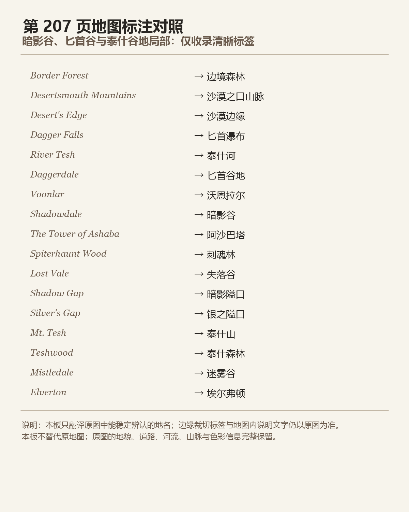
第207页的对照板覆盖边境森林、沙漠之口山脉、沙漠边缘、匕首瀑布、泰什河、匕首谷地、沃恩拉尔、暗影谷、阿沙巴塔、刺魂林、失落谷、暗影隘口、银之隘口、泰什山、泰什森林、迷雾谷与埃尔弗顿。边缘裁切标签与地图内说明文字仍以原图为准。
月海、谷地诸国与龙脊山脉地图局部
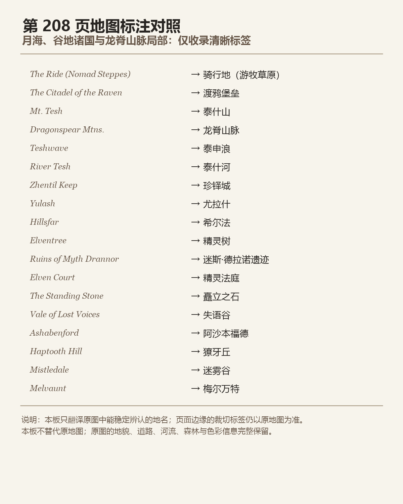
第208页的对照板覆盖骑行地（游牧草原）、渡鸦堡垒、泰什山、龙脊山脉、泰申浪、泰什河、珍铎城、尤拉什、希尔法、精灵树、迷斯·德拉诺遗迹、精灵法庭、矗立之石、失语谷、阿沙本福德、獠牙丘、迷雾谷与梅尔万特。页面边缘的裁切标签仍以原图为准。
瓦萨、月海与查尔大灰地地图局部
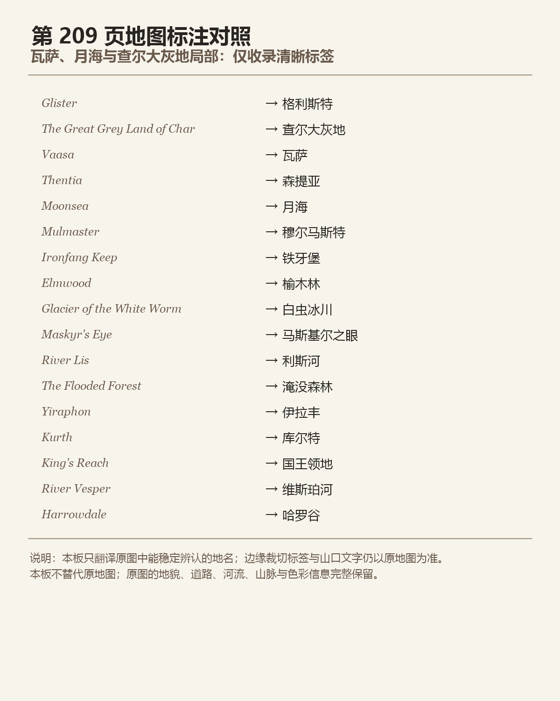
第209页的对照板覆盖格利斯特、查尔大灰地、瓦萨、森提亚、月海、穆尔马斯特、铁牙堡、榆木林、白虫冰川、马斯基尔之眼、利斯河、淹没森林、伊拉丰、库尔特、国王领地、维斯珀河与哈罗谷。边缘裁切标签与山口文字仍以原地图为准。
科米尔与龙海北岸地图局部
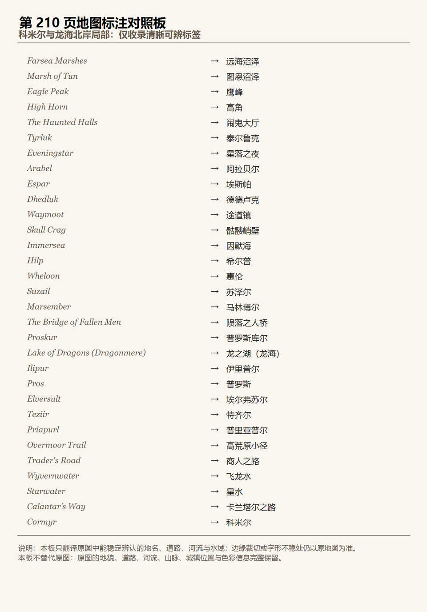
第210页的对照板覆盖远海沼泽、图恩沼泽、鹰峰、高角、闹鬼大厅、泰尔鲁克、星落之夜、阿拉贝尔、埃斯帕、德德卢克、途道镇、骷髅峭壁、因默海、希尔普、惠伦、苏泽尔、马林博尔、陨落之人桥、普罗斯库尔、龙之湖（龙海）、伊里普尔、普罗斯、埃尔弗苏尔、特齐尔、普里亚普尔、高荒原小径、商人之路、飞龙水、星水、卡兰塔尔之路与科米尔。边缘裁切标签及不稳定字形仍以原地图为准。
石地、塞姆比亚与东部谷地地图局部
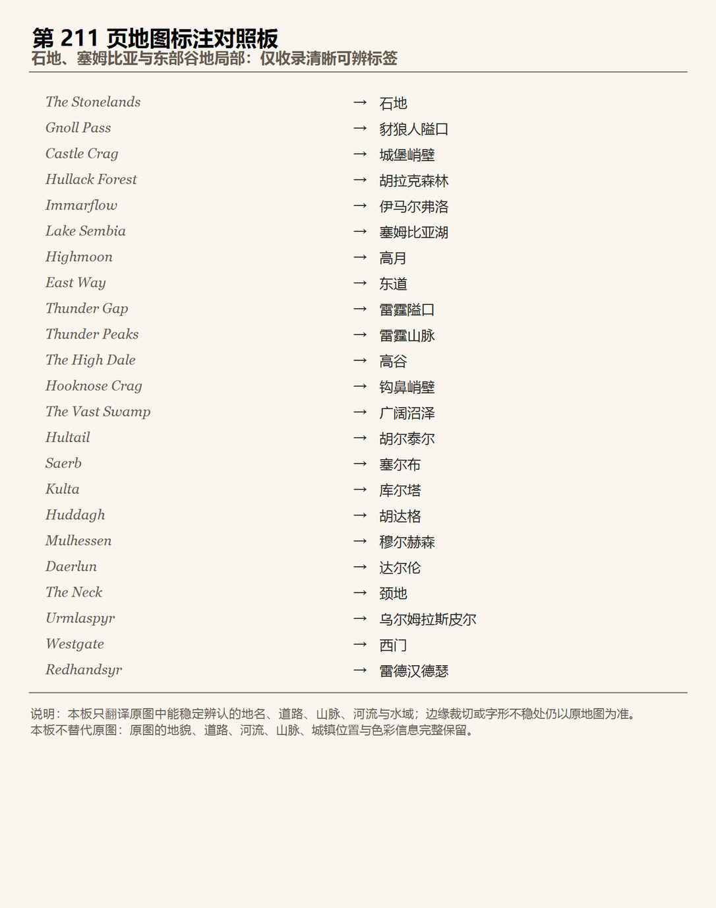
第211页的对照板覆盖石地、豺狼人隘口、城堡峭壁、胡拉克森林、伊马尔弗洛、塞姆比亚湖、高月、东道、雷霆隘口、雷霆山脉、高谷、钩鼻峭壁、广阔沼泽、胡尔泰尔、塞尔布、库尔塔、胡达格、穆尔赫森、达尔伦、颈地、乌尔姆拉斯皮尔、西门与雷德汉德瑟。页面边缘裁切标签仍以原地图为准。
塞姆比亚与内海东岸地图局部
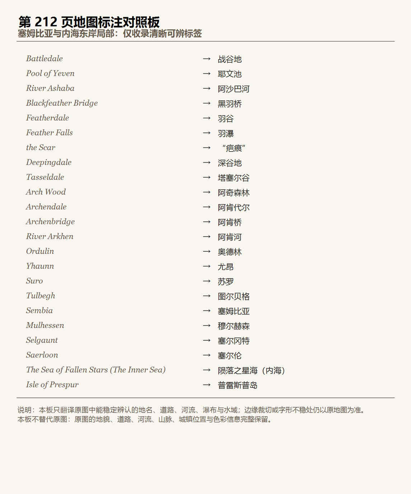
第212页的对照板覆盖战谷地、耶文池、阿沙巴河、黑羽桥、羽谷、羽瀑、“疤痕”、深谷地、塔塞尔谷、阿奇森林、阿肯代尔、阿肯桥、阿肯河、奥德林、尤昂、苏罗、图尔贝格、塞姆比亚、穆尔赫森、塞尔冈特、塞尔伦、陨落之星海（内海）与普雷斯普岛。页面边缘裁切标签仍以原地图为准。
龙湾与内海南岸地图局部
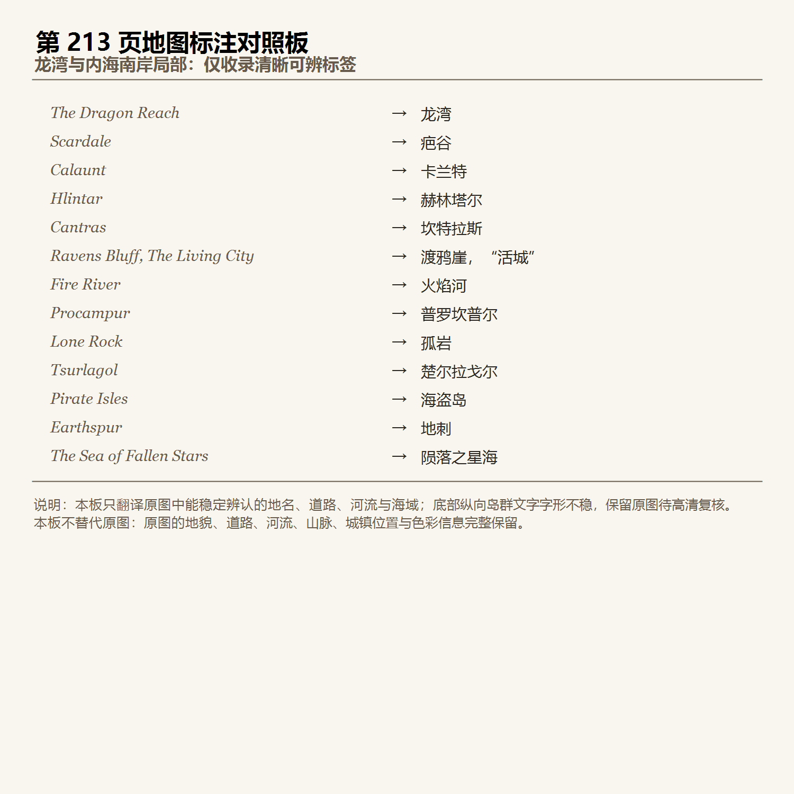
第213页的对照板覆盖龙湾、疤谷、卡兰特、赫林塔尔、坎特拉斯、渡鸦崖（“活城”）、火焰河、普罗坎普尔、孤岩、楚尔拉戈尔、海盗岛、地刺与陨落之星海。底部纵向岛群文字字形不稳定，仍以原地图为准。
北方海域与剑湾北部地图局部
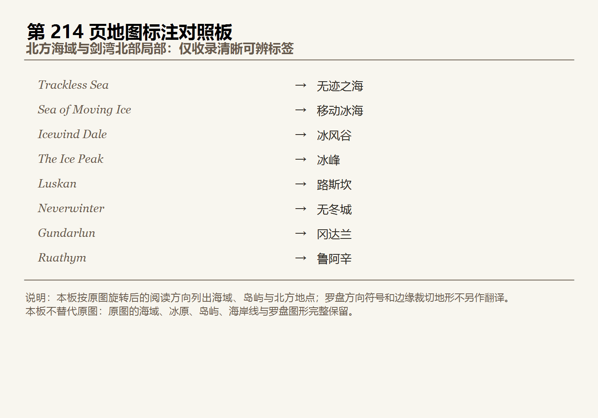
第214页的对照板覆盖无迹之海、移动冰海、冰风谷、冰峰、路斯坎、无冬城、冈达兰与鲁阿辛。原图中的罗盘方向符号与页面边缘裁切地形保持原样。
月沙群岛与永聚岛海域地图局部
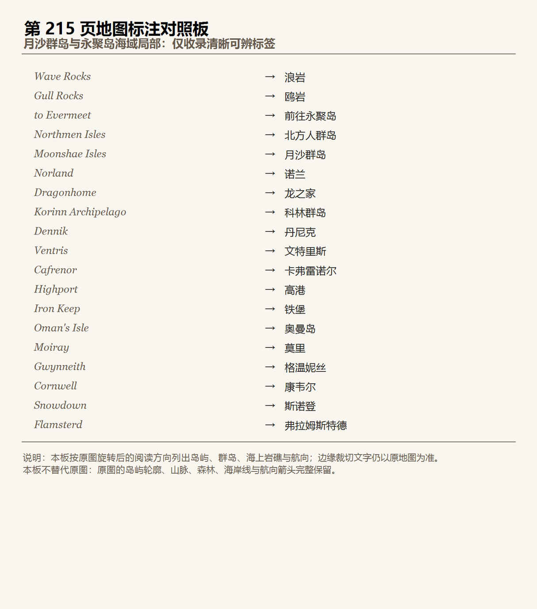
第215页的对照板覆盖浪岩、鸥岩、前往永聚岛、北方人群岛、月沙群岛、诺兰、龙之家、科林群岛、丹尼克、文特里斯、卡弗雷诺尔、高港、铁堡、奥曼岛、莫里、格温妮丝、康韦尔、斯诺登与弗拉姆斯特德。原图按横向方向阅读，边缘裁切文字仍以原地图为准。
南方海域局部与完整地图图例
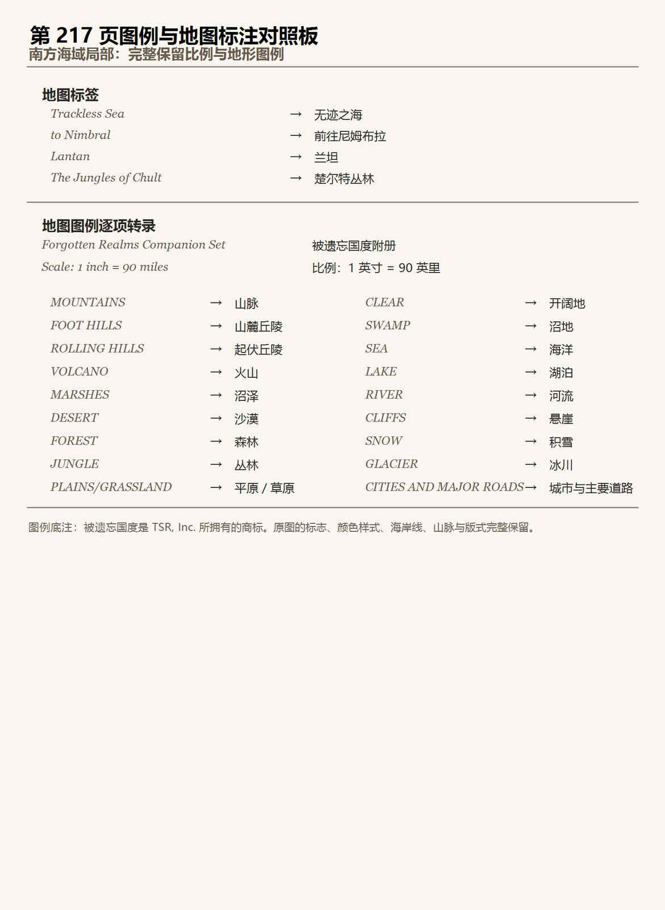
第217页的对照板保留并逐项翻译地图图例：比例为 1 英寸 = 90 英里；图例包括山脉、山麓丘陵、起伏丘陵、火山、沼泽、沙漠、森林、丛林、平原／草原、开阔地、沼地、海洋、湖泊、河流、悬崖、积雪、冰川以及城市与主要道路。同时标注无迹之海、前往尼姆布拉、兰坦与楚尔特丛林；原图标志、颜色样式与地图轮廓仍完整保留。
高森林与北方内陆地图局部
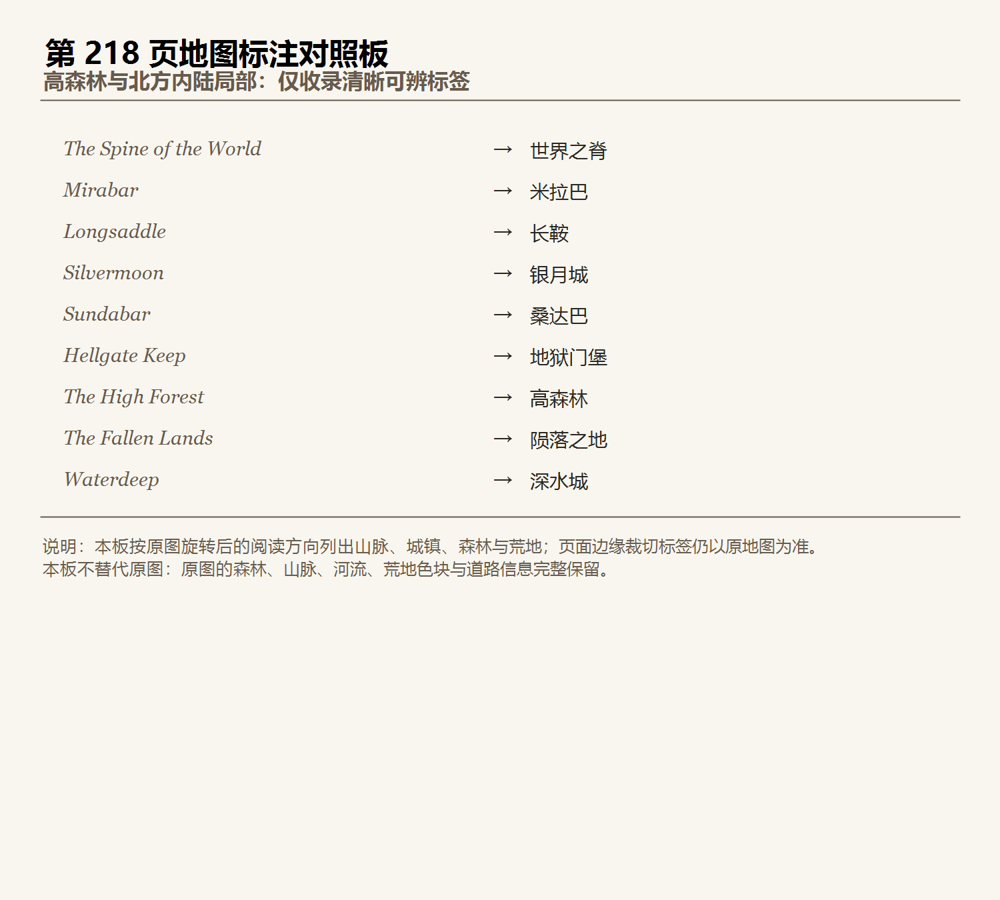
第218页的对照板覆盖世界之脊、米拉巴、长鞍、银月城、桑达巴、地狱门堡、高森林、陨落之地与深水城。原图按横向方向阅读，森林、山脉、河流、荒地色块与道路信息均保留。
剑湾与北方内陆过渡区域地图局部
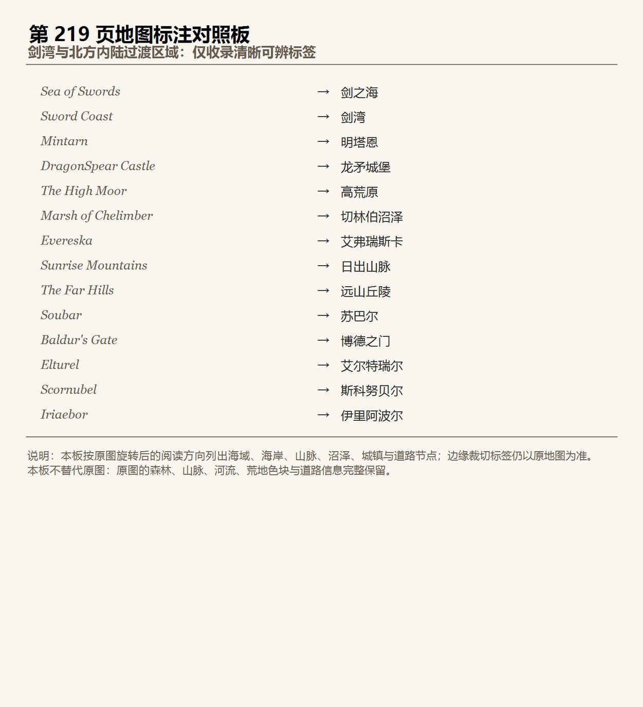
第219页的对照板覆盖剑之海、剑湾、明塔恩、龙矛城堡、高荒原、切林伯沼泽、艾弗瑞斯卡、日出山脉、远山丘陵、苏巴尔、博德之门、艾尔特瑞尔、斯科努贝尔与伊里阿波尔。原图按横向方向阅读，边缘裁切标签仍以原地图为准。
安姆、泰瑟尔与卡林杉北部地图局部
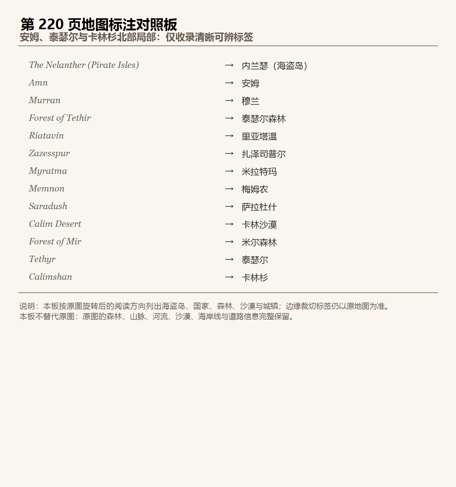
第220页的对照板覆盖内兰瑟（海盗岛）、安姆、穆兰、泰瑟尔森林、里亚塔温、扎泽司普尔、米拉特玛、梅姆农、萨拉杜什、卡林沙漠、米尔森林、泰瑟尔与卡林杉。原图按横向方向阅读，边缘裁切标签仍以原地图为准。
闪耀之海与卡林杉沿岸地图局部
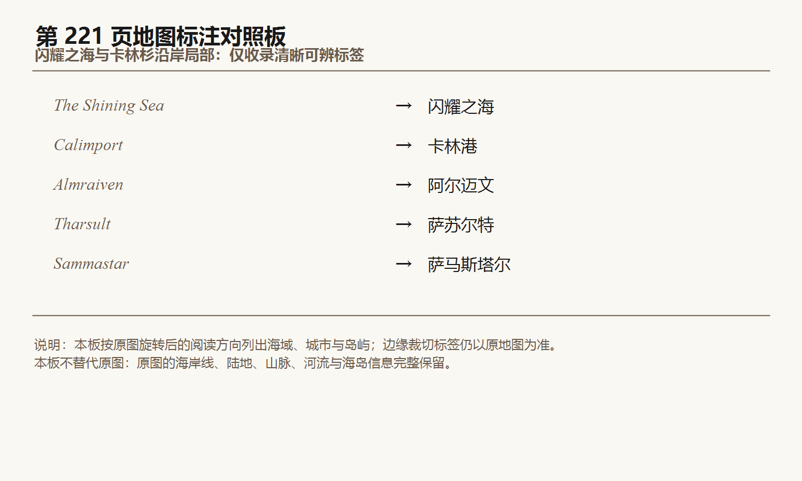
第221页的对照板覆盖闪耀之海、卡林港、阿尔迈文、萨苏尔特与萨马斯塔尔。原图按旋转后的方向阅读，边缘裁切标签仍以原地图为准。
阿诺洛克与冰冻森林地图局部
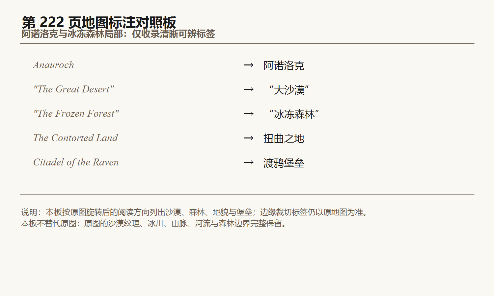
第222页的对照板覆盖阿诺洛克、“大沙漠”、“冰冻森林”、扭曲之地与渡鸦堡垒。原图按旋转后的方向阅读，边缘裁切标签仍以原地图为准。
月海、科米尔与塞姆比亚地图局部
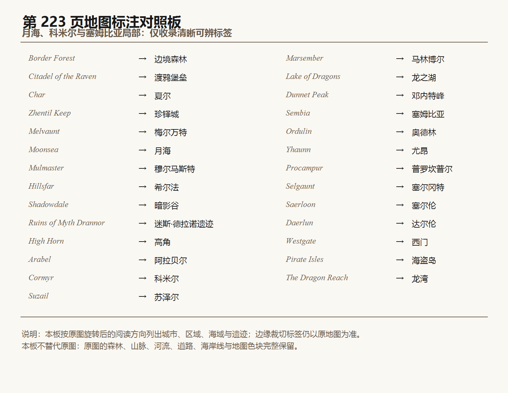
第223页的对照板覆盖边境森林、渡鸦堡垒、夏尔、珍铎城、梅尔万特、月海、穆尔马斯特、希尔法、暗影谷、迷斯·德拉诺遗迹、高角、阿拉贝尔、科米尔、苏泽尔、马林博尔、龙之湖、邓内特峰、塞姆比亚、奥德林、尤昂、普罗坎普尔、塞尔冈特、塞尔伦、达尔伦、西门、海盗岛与龙湾。原图按旋转后的方向阅读，边缘裁切标签仍以原地图为准。
图尔米什、维尔洪湾与乔恩达斯地图局部
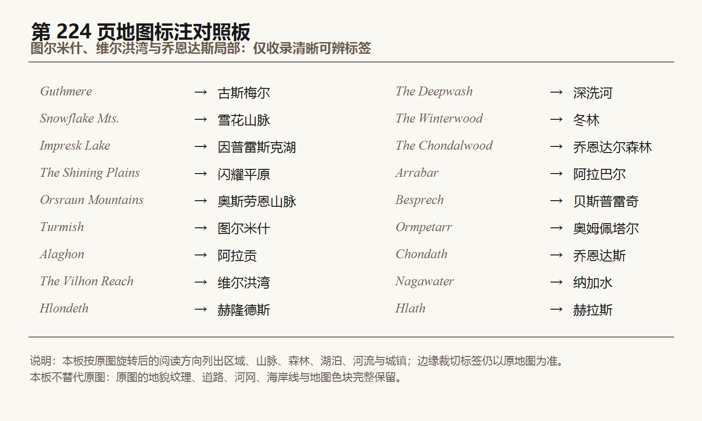
第224页的对照板覆盖古斯梅尔、雪花山脉、因普雷斯克湖、闪耀平原、奥斯劳恩山脉、图尔米什、阿拉贡、维尔洪湾、赫隆德斯、深洗河、冬林、乔恩达尔森林、阿拉巴尔、贝斯普雷奇、奥姆佩塔尔、乔恩达斯、纳加水与赫拉斯。原图按旋转后的方向阅读，边缘裁切标签仍以原地图为准。
夏尔与蒸汽湖周边地图局部
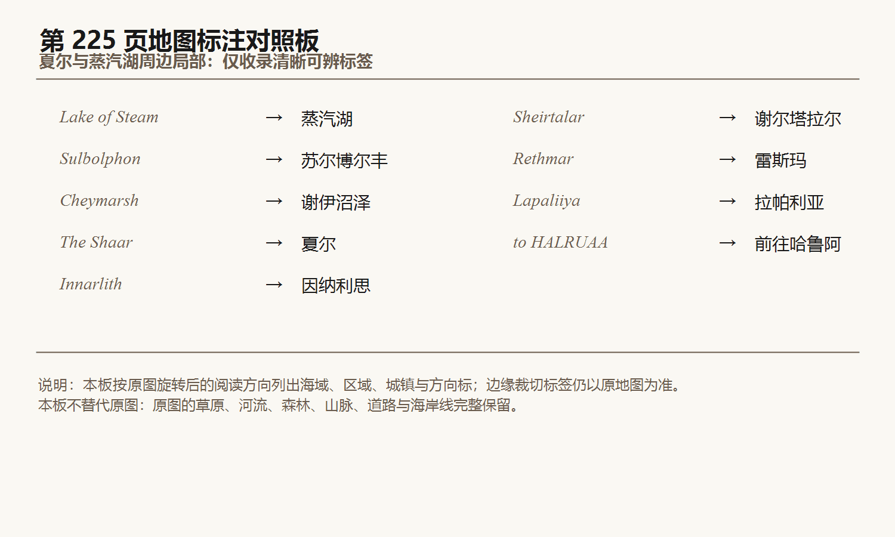
第225页的对照板覆盖蒸汽湖、苏尔博尔丰、谢伊沼泽、夏尔、因纳利思、谢尔塔拉尔、雷斯玛、拉帕利亚，以及“前往哈鲁阿”方向标。原图按旋转后的方向阅读，边缘裁切标签仍以原地图为准。
索萨尔与大冰川地图局部
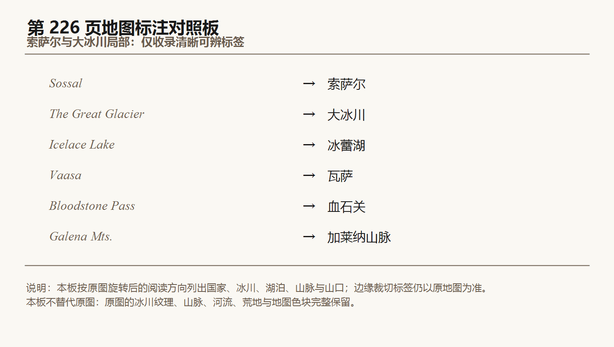
第226页的对照板覆盖索萨尔、大冰川、冰蕾湖、瓦萨、血石关与加莱纳山脉。原图按旋转后的方向阅读，边缘裁切标签仍以原地图为准。
达马拉、纳费尔与东部海岸地图局部
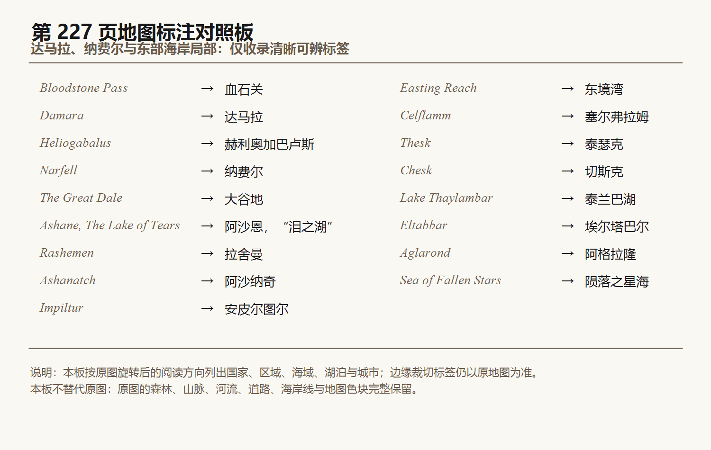
第227页的对照板覆盖血石关、达马拉、赫利奥加巴卢斯、纳费尔、大谷地、阿沙恩“泪之湖”、拉舍曼、阿沙纳奇、安皮尔图尔、东境湾、塞尔弗拉姆、泰瑟克、切斯克、泰兰巴湖、埃尔塔巴尔、阿格拉隆与陨落之星海。原图按旋转后的方向阅读，边缘裁切标签仍以原地图为准。
棋森塔、穆尔霍兰德与安瑟地图局部
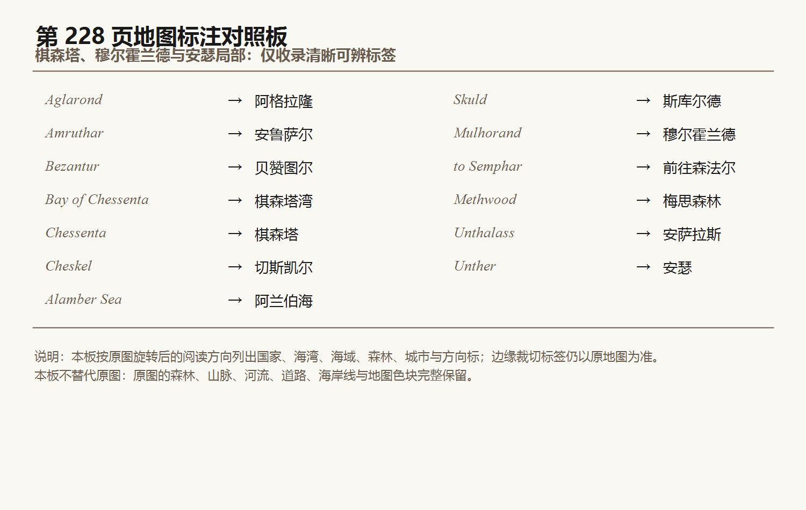
第228页的对照板覆盖阿格拉隆、安鲁萨尔、贝赞图尔、棋森塔湾、棋森塔、切斯凯尔、阿兰伯海、斯库尔德、穆尔霍兰德、“前往森法尔”、梅思森林、安萨拉斯与安瑟。原图按旋转后的方向阅读，边缘裁切标签仍以原地图为准。
东夏尔与大裂谷南侧地图局部
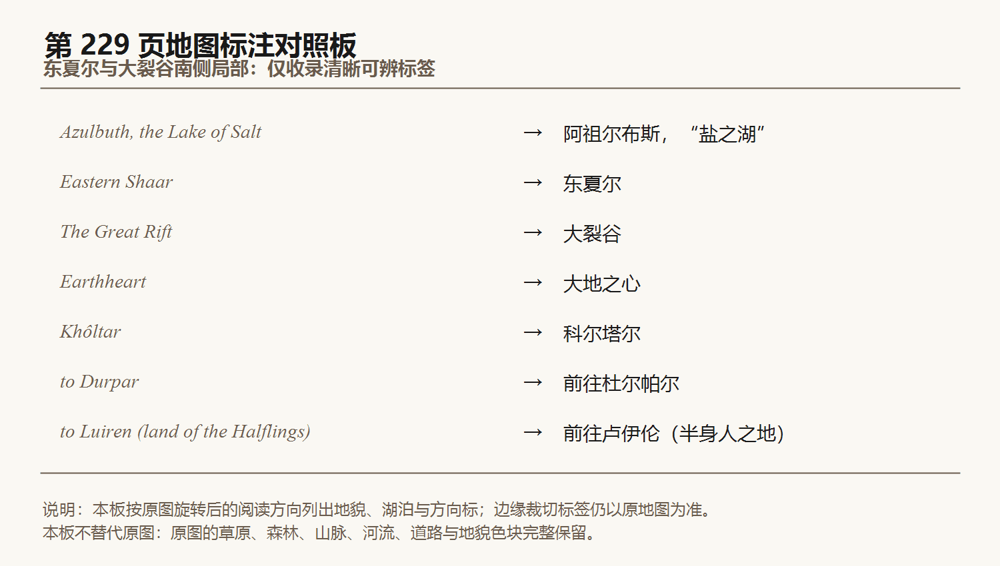
第229页的对照板覆盖阿祖尔布斯“盐之湖”、东夏尔、大裂谷、大地之心、科尔塔尔、“前往杜尔帕尔”以及“前往卢伊伦（半身人之地）”。原图按旋转后的方向阅读，边缘裁切标签仍以原地图为准。
地名、地形、道路、遗迹、城镇、比例与图例以原图为准；中文标签见对照板。
封底
为《Forgotten Realms Campaign Set》封底。封底宣传文字说明：盒装内容包括一册 96 页玩家书，按字母顺序收录已知区域、城市、人物与事物，并配有许多著名城市与土地的地图；一册 96 页 DM 书，包含运行国度战役所需资料，从把现有角色带入被遗忘国度，到两场完整的导入式小冒险，再到已知魔法文献及其中魔法的清单；另有四张全彩地图展示整片国度和较著名区域的细节，并收录专属于被遗忘国度的冒险规则。封底最后写着：“这里有你需要的一切——除了你的想象力。”
（印刷地图与封底页）；保留全部地图页、图例、比例与封底宣传和版权信息。